GitHub Student Developer Pack
Follow these steps to avail the Student Developer Pack:
-
➤ Important information to be noted before you start applying:
- ● Two-factor authentication must be turned on for your GitHub account.
- ● Configured billing information and the name on the billing address must match the name on the academic affiliation documentation. (You do not have to add a payment method.)
- ● Location access must be provided to move further through the process after typing in the name of the educational institution.
- 🟆 Step 1: Visit the GitHub Student Developer Pack webpage at https://education.github.com/pack 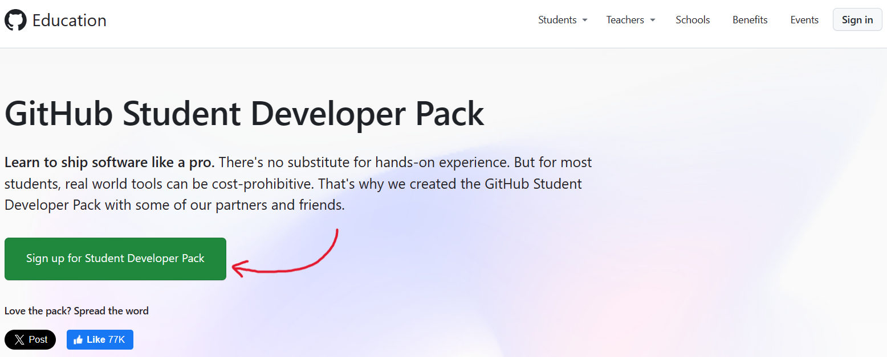
-
🟆 Step 2: Click on 'Sign up for Student Developer Pack' or click here for the direct link and you should find this page.

- 🟆 Step 3: Click on 'Get school benefits' and you will be prompted to sign in with your GitHub account credentials or create a new account if you don't have one already. 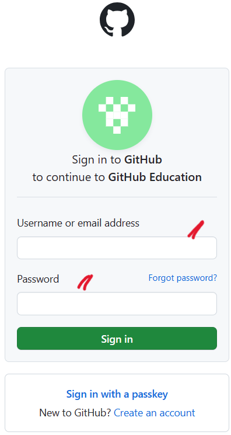
- 🟆 Step 4: After you sign in, you will be asked to select your academic status. Select 'Student'. Then, scroll down. 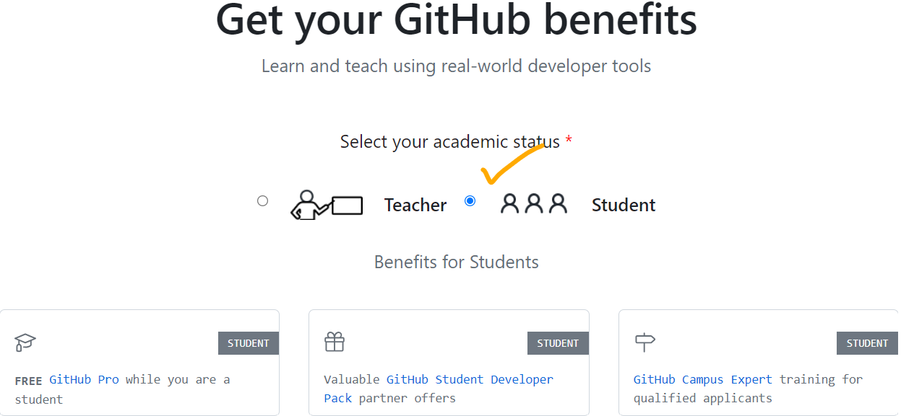
-
🟆 Step 5: You should be able to see this page view. Select your email address. Next, type in the name of your educational institution and click continue.
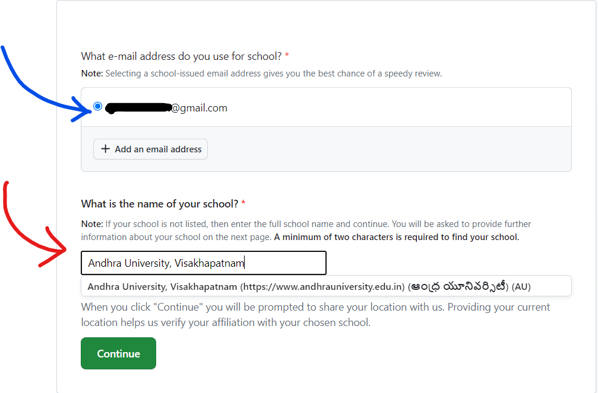
- ➥Note: You may be prompted with an error asking you to use only your college-issued email address, but this can be rectified by re-choosing another option of the college name from the suggestions list. There are 2 options for the same institution, one to verify with a college email id and the other option to verify with a document or ID. So, if you get an error, try with the other college name option.
- • If you have a college-issued email address, using it will get it done instantly. If you wish to verify yourself with a student ID card or any other acceptable document, follow the above instructions.
- 🟆 Step 6: Click on 'Continue'. You may be prompted by the browser to allow location access to the website as shown in the below image. Please remember that providing location access is mandatory and plays an important role in the verification process. You cannot move further without giving location access. 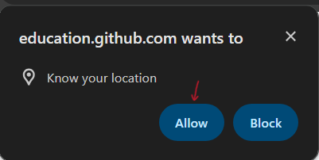
-
🟆 Step 7: After the location is determined, a new page opens, and you need to upload a qualifying proof of current academic status.
- • Make sure to have a scanned copy or a clear photo of your student ID card, enrollment letter, or any other acceptable document ready for upload.
- • If you choose to take a picture with your webcam or phone camera, make sure it is clear or the application might get rejected, and you need to re-apply.
- • If you choose to upload a document, only '.JPEG' format is accepted. The image must be of at least 1024x768 resolution and a minimum of 100 KB and a maximum of 10 MB in size. 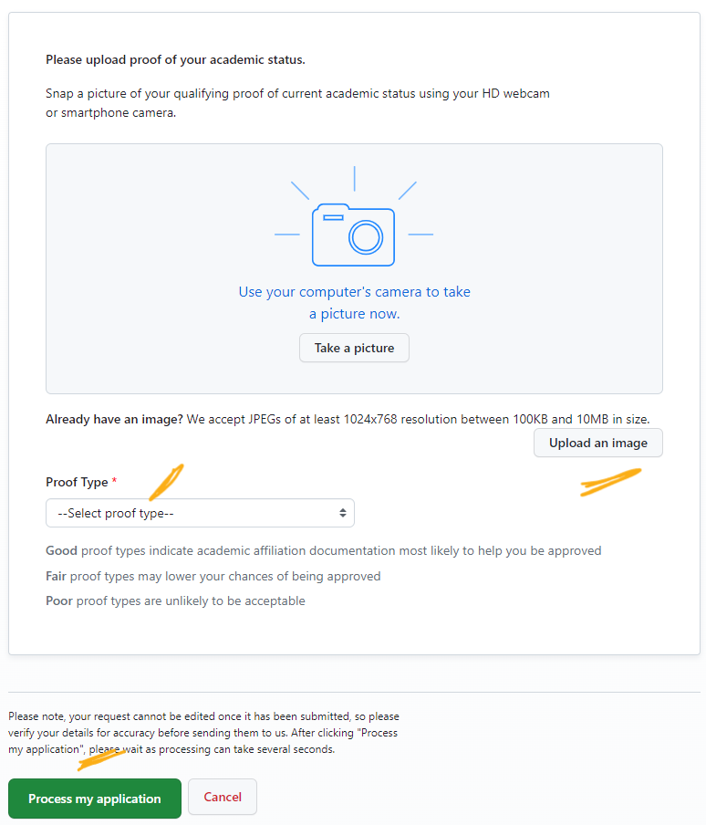
- ☛ Tip to avoid rejection: All the proofs are not manually reviewed by humans. So, the proof type you select and the image you are uploading must be clear and should not have any unnecessary blank space and should be cropped neatly in a way to focus only on the document to avoid rejection
- ⦿ After uploading or taking a picture of your document, select the type of proof you are submitting. 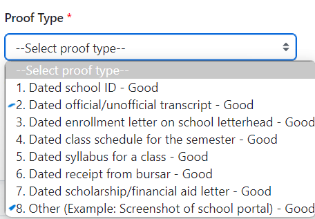
- ➛ You need to make sure you select the correct or most appropriate proof type since the proof is not reviewed by a human and is reviewed automatically. So, anything that might not be accurate will cause your application to get rejected.
- ⦿ If you are submitting:
- • a student ID card, select 'Dated school ID'
- • a dated fee receipt with course info, select option 6 'Dated receipt from bursar'
- • a dated Study certificate, or enrollment letter, or admit card, select option 1 (Dated official/unofficial transcript)
- • any other dated document that can demonstrate your enrollment in a course, select option 8 (other)
- • Option 2 (Dated official/unofficial transcript) and option 8 (Other) can be used interchangeably for most of the proofs.
-
🟆 Step 8: Now, after you are done with uploading proof and selecting proof type, click on 'Process my application'
- • Once you click on 'Process my application', your application will be submitted for review.
- • It may take some time for the review process to complete.
- • If your application is approved, you will see the status as 'Approved'. For the benefits to get activated, you need to wait for at least 3 days, and once the benefits are activated, you will receive an email notification with instructions on how to access the GitHub Student Developer Pack benefits.
- • If you are approved, you will be able to see 'Approved' on the main page here 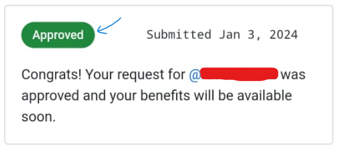
- • After your benefits get activated, you will receive an email on how to get started, and the status online will change. 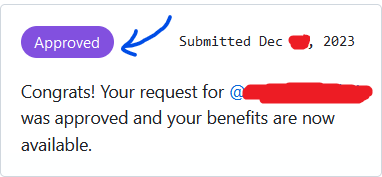
- • If your application is rejected, you will see the status as 'Rejected' and receive an email with the reason for rejection and instructions on how to re-apply.
- ☛ Common solutions for rejection:
- (1) Try using the device camera to take a clear picture. If using the device camera is not possible or the image taken is not clear, try uploading a scanned clear image of the document neatly/properly cropped in a way the main content is in focus. Remember to rename the file/use a different file (screenshot or another copy) each time you re-apply since it will not allow you to re-apply with the same file/image. Also, try changing the proof type to another option. (refer to step 7) 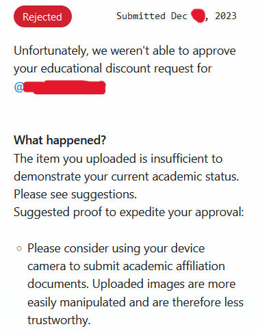
- (2) Incorrect or mismatched billing information could be the culprit. Make sure the legal name/full name on your academic affiliation documentation exactly matches the name on your billing address/info. 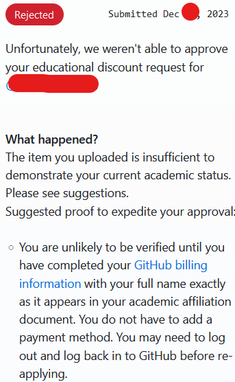